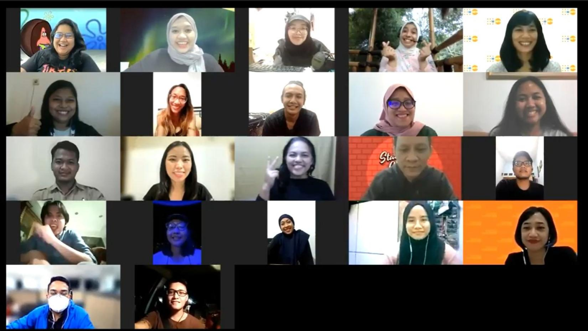

Acara tersebut meninggalkan dampak yang besar bagi Bintang. Ketika ia melihat orang-orang belajar tentang tantangan perempuan bepergian di malam hari dari pameran tersebut, ia menyadari bahwa pekerjaan komunikasi dan advokasi membantu orang memahami hal-hal yang tidak akan mereka pahami jika tidak ada informasi yang relevan, dan bahwa informasi yang relevan dapat mengarah pada kondisi yang lebih baik bagi perempuan dan anak perempuan di seluruh dunia. Saat itulah Bintang memutuskan bahwa inilah yang ingin ia lakukan, dan inilah caranya untuk berkontribusi menuju masa depan yang lebih baik.
“Dengan pengetahuan dan tekad yang baru saya temukan, saya melanjutkan perjalanan saya dan menemukan UN Volunteer.” Ketika Bintang mengenal program PBB dan orang-orangnya, ia menyadari betapa pentingnya peran relawan bagi PBB. Baik itu keahlian atau waktu atau upaya mereka, Relawan PBB sangat bersemangat dengan apa yang mereka lakukan. Nilai-nilai ini selaras dengan semangatnya. Dan pada tahun 2021, ia memulai perjalanannya sebagai Relawan PBB. “Saya dapat melanjutkan magang saya sebelumnya di UN Women Indonesia untuk tugas pertama saya sebagai Relawan PBB. Sejak saat itu, saya belajar banyak tentang kondisi hak-hak perempuan, pemberdayaan perempuan, dan kesetaraan gender.” Sayangnya, penugasan Bintang bertepatan dengan pandemi dan seperti yang lainnya, ia terpaksa mengubah cara komunikasinya. Selama periode ini, ia mendukung Kampanye Bersama PBB di media sosial untuk 16 Hari Aktivisme 2021.
Seperti yang disebutkan supervisor Bintang, Radhiska Anggiana, Analis Advokasi dan Komunikasi, UN Women Indonesia, “Kami menyadari betapa besarnya nilai relawan yang berada di garis depan dalam melakukan perubahan. Relawan seperti Bintang berkontribusi dengan cara mereka sendiri, membawa beragam pengalaman dan perspektif baru. Penugasan Bintang dimulai selama pandemi COVID-19. Sejak wabah, pekerjaan kami disesuaikan untuk memengaruhi respons berbasis gender dan mengakui kontribusi perempuan. Komunikasi memainkan peran penting dalam menyoroti hal ini dan media sosial menjadi semakin penting dalam memperkuat pesan tentang kesetaraan gender dan COVID-19. Pengetahuan Bintang tentang pesan media sosial dan produksi konten, dikombinasikan dengan hasratnya untuk berkomunikasi demi kesetaraan gender, telah memberikan kontribusi yang sangat besar bagi pekerjaan kami. Pendekatannya yang konsisten dalam bekerja, ditambah dengan sikapnya yang positif dan konstruktif, memungkinkan kami untuk mengeksplorasi cara-cara yang lebih kreatif dalam mengubah norma-norma sosial menuju kesetaraan gender.”

Caption: The virtual graduation session of Comedy for Equality’s workshop.
Each participant performed their stand-up comedy bit. 6 December 2021.
Photo: © UN Women